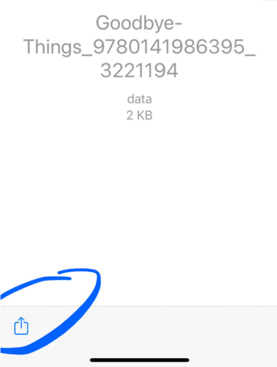

3 S-postimetodi
Lainaus ja siirto tapahtuu aivan kuten yllä Dropbox-metodissa aina kohtaan 9 asti, eli tee yltä Dropbox-metodista kohdat 1-8.
Tämän jälkeen:
- Valitse taas share-kuvake.

- Valitse tällä kertaa kuitenkin jakamisen tavaksi “Mail”.

- Lukulaitetta asentaessasi olet saanut pbsync.com-päätteisen s-postiosoitteen, johon voit lähettää kirjoja, jolloin ne menevät suoraan lukulaitteeseesi. Lähetä nyt kirja tähän s-postiosoitteeseesi.

- Valitse laitteen päävalikosta taas “Apps” ja sen alta “Send-to-PocketBook”.

- Paina download-tyyppistä kuvaketta.

- Kun palaat lukulaitteen päänäkymään, voit jälleen huomata, että s-postimetodillakin kirja on siirtynyt lukulaitteeseen ongelmitta.

- Laite ymmärtää, että kyseessä on lainattu kirja, ja ilmoittaa lainausajan asianmukaisesti.